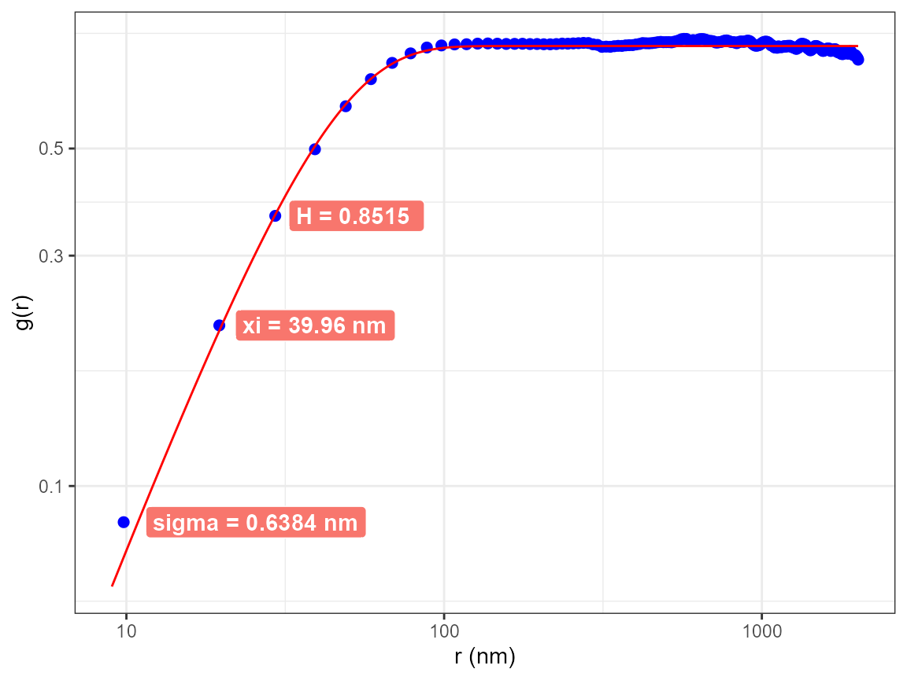
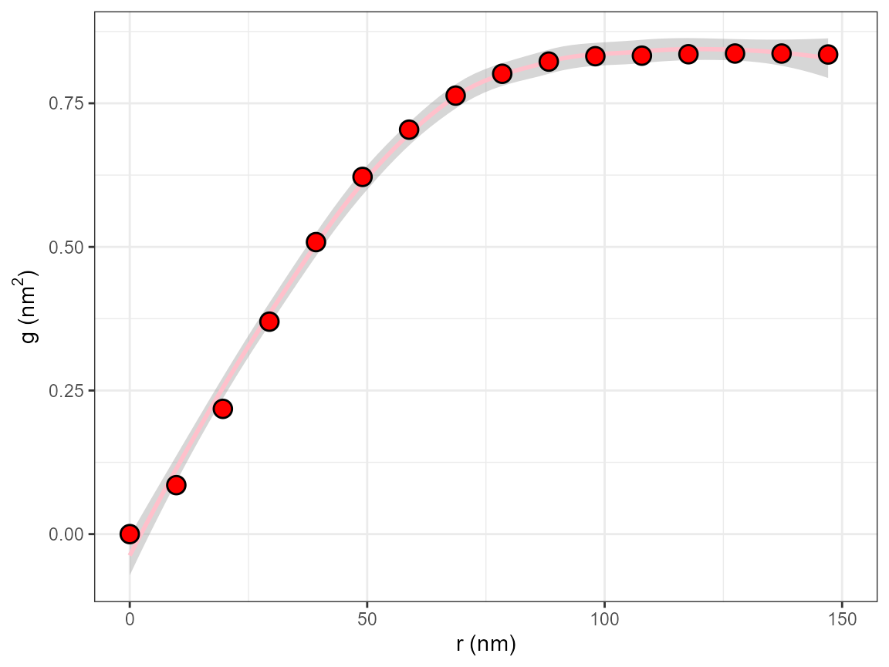

library(nanoAFMr)
#> The legacy packages maptools, rgdal, and rgeos, underpinning the sp package,
#> which was just loaded, will retire in October 2023.
#> Please refer to R-spatial evolution reports for details, especially
#> https://r-spatial.org/r/2023/05/15/evolution4.html.
#> It may be desirable to make the sf package available;
#> package maintainers should consider adding sf to Suggests:.
#> The sp package is now running under evolution status 2
#> (status 2 uses the sf package in place of rgdal)
library(ggplot2)The Height-Height Correlation Function is discussed in the publication: Height-Height Correlation Function to Determine Grain Size in Iron Phthalocyanine Thin Films Thomas Gredig, Evan A. Silverstein, Matthew P Byrne, Journal: J of Phys: Conf. Ser. Vol 417, p. 012069 (2013).
It defines a correlation function \(g(r)\) as follows:
\[ g(r) = <| (h(\vec{x}) - h(\vec{x}-\vec{r}) |^2 > \]
where \(h(\vec{x})\) is the height at a particular location. The height difference is computed for all possible height pairs that are separated by a distance \(|\vec{r}|\). Immediately, if follows that \(g(0)=0\).
For a set of images, the correlation function can be interpreted as follows:
\[ g'(r) = 2\sigma^2 \left[ 1- e^{- \left(\frac{r}{\xi}\right)^{2\alpha}} \right] \]
which has 3 fitting parameters, the long-range roughness \(\sigma\), the short-range roughness \(\alpha\) (Hurst parameter), and the correlation length \(\xi\).
The computation is implemented in this package as follows, the image
is flattened, then HHCF is computed and the curve is fit. Choosing a
large number of iterations is crucial. The computation is executed with
the AFM.hhcf() function.
filename = AFM.getSampleImages(type='tiff')
a = AFM.import(filename)
a = AFM.flatten(a)
AFM.hhcf(a, numIterations= 2e5)
You can see the fit parameters, and make a custom plot from the data, if you export all results from the function
library(pander)
h = AFM.hhcf(a, numIterations= 2e5, allResults = TRUE)
## show the fit parameters
pander(h$fitParams)| sigma | xi | Hurst | sigma.err | xi.err | Hurst.err |
|---|---|---|---|---|---|
| 0.6422 | 40.12 | 0.851 | 0.0004626 | 0.6382 | 0.03328 |
## show the HHCF data
head(h$data)
#> r.nm g num
#> 1 9.803922 0.08424382 199479
#> 2 19.607843 0.21613063 198618
#> 3 29.411765 0.36412534 197651
#> 4 39.215686 0.50388369 196671
#> 5 49.019608 0.61771192 195704
#> 6 58.823529 0.70268515 194753
## display the entire graph
h$graph